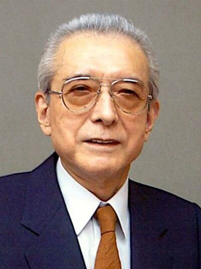

山内溥（やまうち ひろし，1927年11月7日～2013年9月19日），出生于日本京都，出生时名字为山内博。日本企业家、任天堂游戏制作公司顾问、前总裁。毕业于日本私立第一学府早稻田大学。管理任天堂超过50年之久，游戏界教父级人物。
山内溥执掌任天堂52年， 将任天堂从年销售额不足20亿日元的纸牌工场发展成了市场价值200亿美元的世界型企业，更一手缔造了如今电子游戏产业。2013年9月19日，任天堂前社长山内溥去世，享年85岁。
山内溥虽然出身京都工厂主世家，但与生俱来具备了近乎偏执的舍我其谁霸主气质，行事不妥协，即便在其众叛亲离的最凄凉景况，依然保持着来者不拒、去者不追的从容。山内溥极度自我中心的霸道作风也体现到了其主导下任天堂出品游戏的综合品质。
山内溥执掌任天堂52年，将任天堂从年销售额不足20亿日元的纸牌工场发展成了市场价值200亿美 元的世界型企业，更一手缔造了如今游戏产业。